PINGU and Pinga are home alone and PINGU gets carried away while playing and hurts his beak. They realise they must go to the doctor where at first he is frightened. However when Mother arrives he is reassured and is able to get his beak seen to.
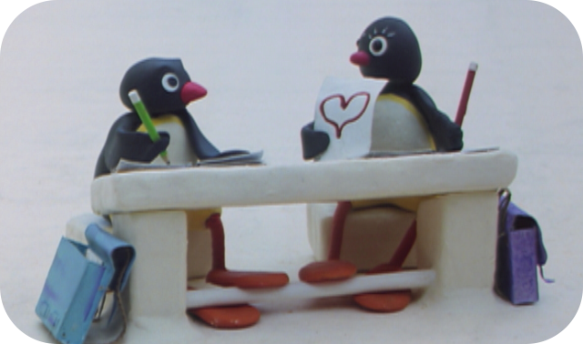
Episode 2
Pingu's Admirer
At school, PINGU is irritated to find that the new girl penguin seems to have taken a shine to him and is insisting on following him. However, when a snowball misses it target they are united in being the culprits and become friends as well.
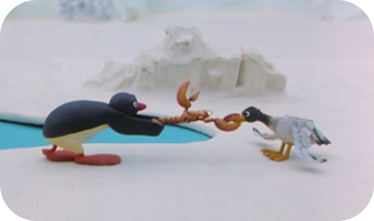
Episode 3
Pingu And The Seagull
PINGU is plagued by a mischievous seagull that becomes a constant irritation. Nevertheless he helps it to get rid of a crab which has attached itself to its beak. The seagull, however, gives him small thanks as it poos on his head.
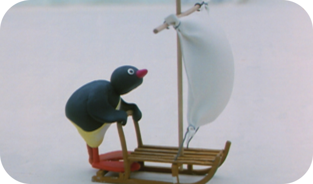
Episode 4
Pingu Surfing On The Ice
PINGU’s mother has just hung the clean washing on the line when a strong wind blows up. PINGU then hits on the idea of ice-surfing and combines the clean sheet and his sledge to fit the purpose. Although he has great fun the result is also a dirty sheet which does not please Mother one bit and she makes PINGU and Robby rectify the situation.
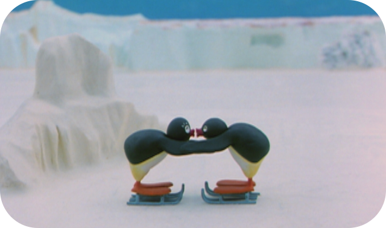
Episode 5
Pingu's First Kiss
PINGU and Pingi want to have their first kiss. However their friends have other ideas and think up idea of interrupting them. Eventually however they take pity and the two are allowed some privacy.
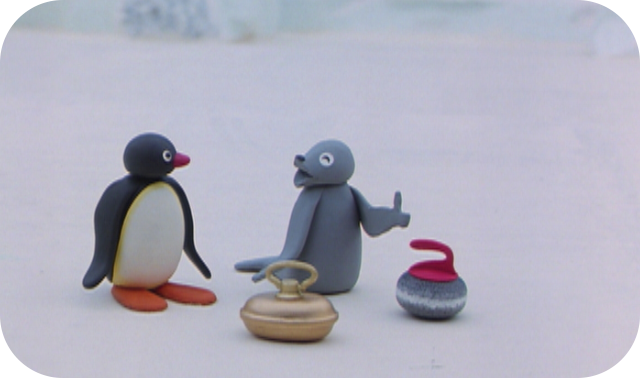
Episode 6
Pingu's Curling Party
PINGU and Robby are curling, PINGU is using Father’s bed bottle as a curling stone, but there is small mishap. The neighbour, who has had his reading interrupted, wants to show the two troublemakers how it is done. But to the amusement of the two youngsters, it turns out that the adults can’t do any better themselves.
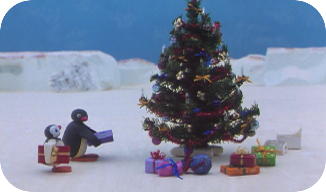
Episode 7
Pingu's Family Celebrate Christmas
PINGU and his family are preparing for Christmas. PINGU and Pinga can scarcely wait for the handing out of presents. Whilst Mother and Father are decorating the tree outside an argument arises. The children make sure that their parents kiss and make up.
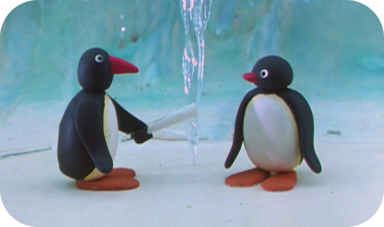
Episode 8
Pingu As An Icicle Player
PINGU and his friends Hugo and Robby are playing hide-and-seek. But PINGU appears to have vanished. However when PINGU taps the icicles as if they were bells and the sound makes his curious friends come and see the amazing ice cavern for themselves.
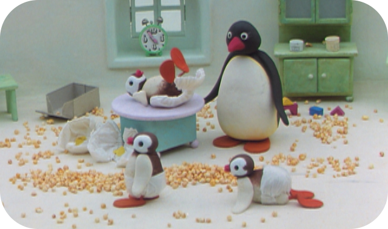
Episode 9
Pingu As A Chef
PINGU and Pinga are once more at home alone. They are hungry and practise cooking. Although their culinary skills almost always end in a disaster they do manage to get the mess they have made cleared up before Mother and Father get back.
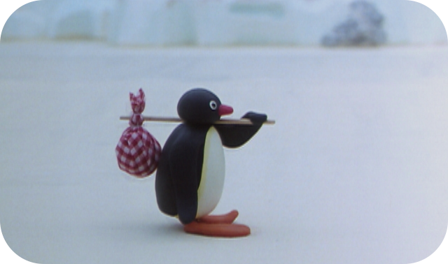
Episode 10
Pingu's Outing
PINGU goes to see his aunt, who lives in another village. After a varied journey his aunt is pleased to see him and welcomes him into the house. At first PINGU has a great time but as night approaches PINGU becomes homesick and is very relieved that he has his teddy to comfort him whilst he is away from home.
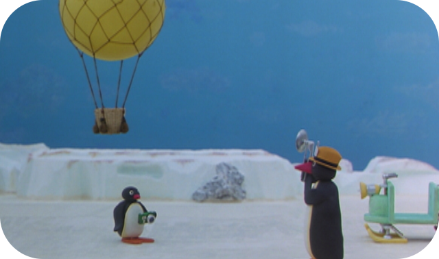
Episode 11
Pingu And The Camera
PINGU is playing at being a photographer with his friend Robby. In the process, PINGU also wants to capture a hot-air balloon on film. A photojournalist who comes rushing along takes a picture of the two friends with the balloon. When they go to get the film developed however it transpires that PINGU had forgotten to take off the lens cap and none of the photos come out. Luckily the picture in the newspaper shows PINGU and his friends in front of the balloon so they always have that to treasure.
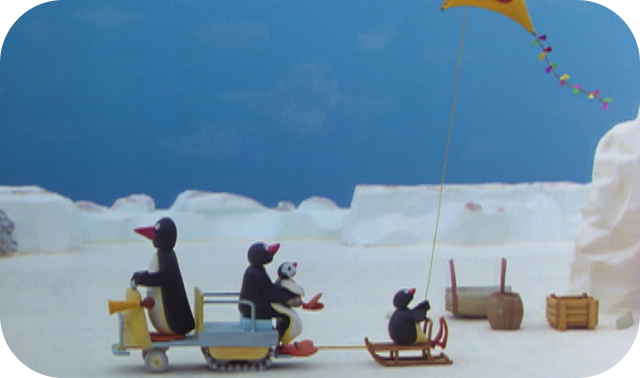
Episode 12
Pingu's Parents Have No Time
PINGU and Pinga need help from their parents, as they have broken their kite. Unfortunately they have no time. In the end they go off to Grandfather's house and when they come looking Mother and Father find the three of them happily flying a brand new kite.
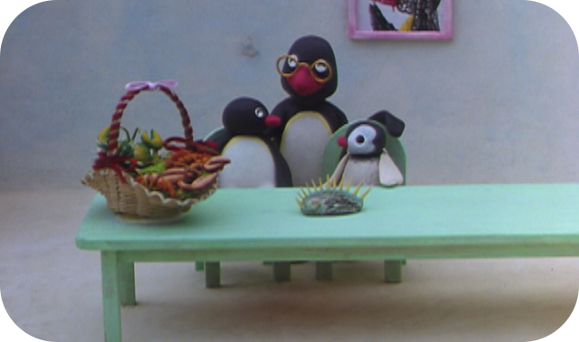
Episode 13
Pingu And The Packing Material
PINGU wants to give his Grandfather a birthday present. However, his little sister Pinga has brought along a larger present. PINGU wants to equal her, and has the small present wrapped up to make it look big.
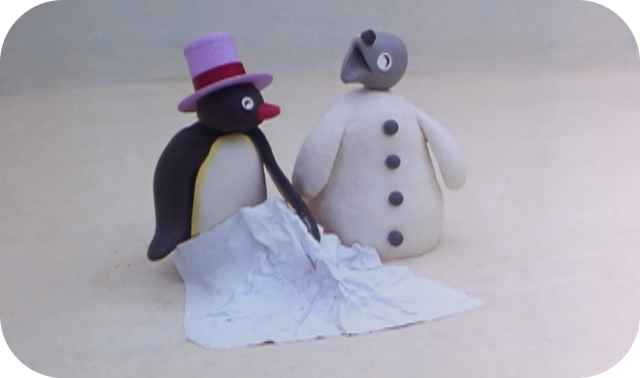
Episode 14
Pingu And The Apprentice Magician
PINGU proudly presents Pingi and Pinga with his magic tricks. Everything works until Pinga recognises the trick with the flying carpet whereupon PIMGU is very put out. He goes away and practises so that he can impress his friends once again.
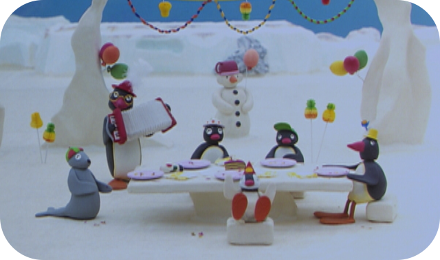
Episode 15
Pingu's Birthday
PINGU is celebrating his birthday with his friends. The place is decorated and they have all sorts of games to play. As he is the birthday boy, PINGU has to join in all the game and begins to be rather miserable when he loses. Luckily the situation is rescued by Mother arriving with the birthday cake.
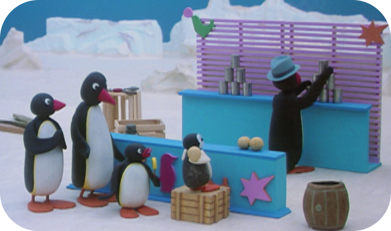
Episode 16
Pingu At The Fairground
PINGU is allowed to go to the fair ground together with the family. There is a lot going on, and PINGU wants to try everything. He overdoes things somewhat and does not feel at all well. Finally, however, he is happy again, thanks to Pinga.
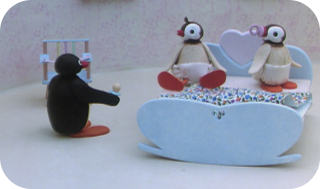
Episode 17
Pingu As Babysitter
PINGU’s mother is out with her friends. In the meantime, PUNGU has the task of looking after the twins. This wears him out so much that he gets very tired. Luckily he manages to think up a little trick to help him stay awake.
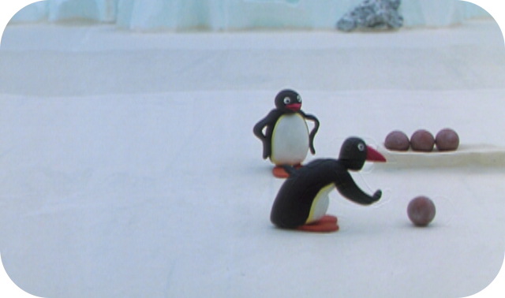
Episode 18
Pingu Cannot Lose
PINGU has some bad luck while bowling. He doesn’t get any points. His bowl seems to be playing up and he cannot understand it. But all the others enjoy PINGU’s funny throws and in the end Pingu enjoys himself too.
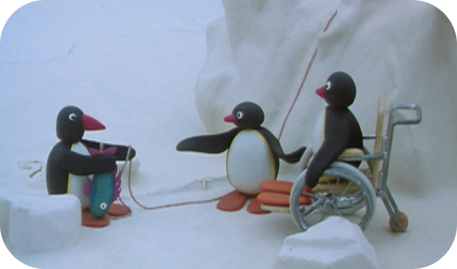
Episode 19
Pingu And The Disabled Penguin
With his friend, PINGU is playing a practical joke using a fish on a string. But when it comes to playing a trick on someone in a wheelchair PINGU is not so sure. To his surprise however having been the brunt of the joke the disabled penguin joins in the joke, in fact in the end it is PINGU's other friend that needs the wheelchair home when the joke back fires.
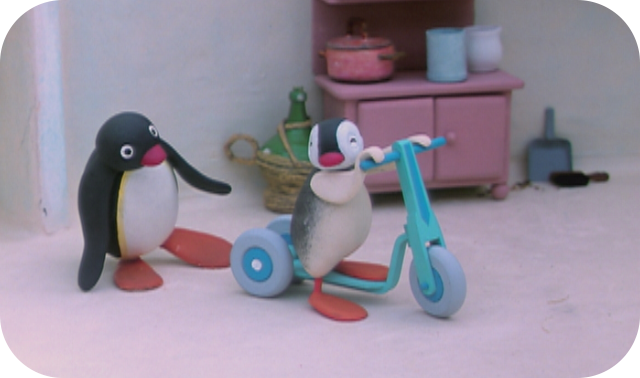
Episode 20
Pingu And The Gift
Pinga is inconsolable, because her father has driven over her toy pram. The whole family is at a loss until PINGU gives her his new tricycle. Although Pinga does have an accident on it, she is delighted with PINGU's gift.
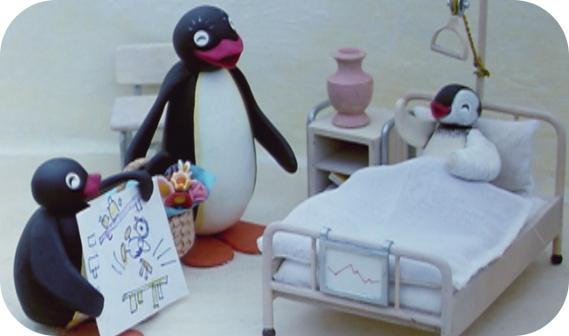
Episode 21
Pingu's Hospital Visit
With his mother, PINGU visits the injured Pinga in hospital. PINGU manages to cheer up the whole ward by pretending to be the surgeon in a shadow play he puts on. The nurse and real surgeon look on and are so impressed they give PINGU a prize when he is finished.
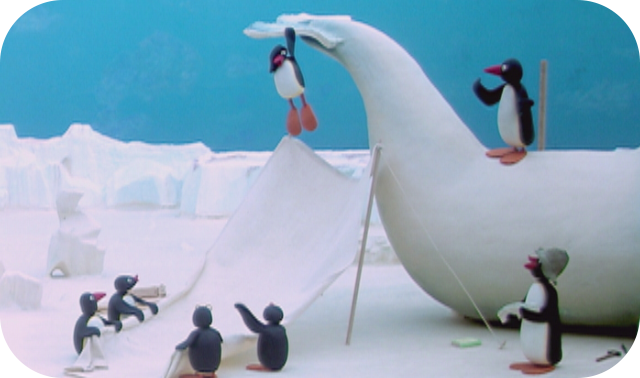
Episode 22
Pingu On The School Trip
The class outing takes them to see a sculptor, where a huge whale is being hewn. During the visit a classmate climbs on the sculpture, which even PINGU can see is going too far. When part of the sculpture breaks the young penguin is left hanging high in the air. By the time they get him down he has certainly learnt his lesson.
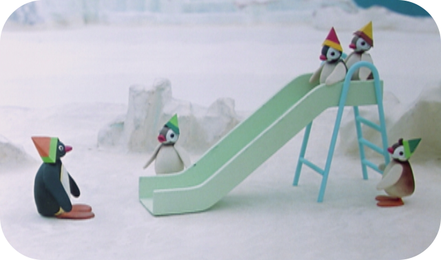
Episode 23
Pingu Visits The Kindergarten
PINGU accompanies little Pinga to the kindergarten. On the way there, his friends laugh at him. Unexpectedly helps PINGU out o f his embarrassment and in fact PINGU has a great day at the kindergarten.
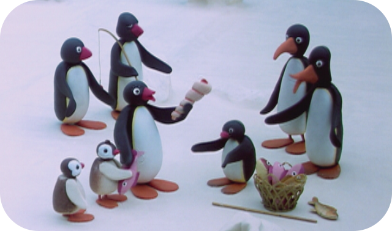
Episode 24
Pingu And The Stranger
When the strangers pass through the village every door is closed. Only PINGU is curious, and he discovers their strange way of fishing. The rest of the village are fascinated and impressed with what PINGU has just learnt and showed them.
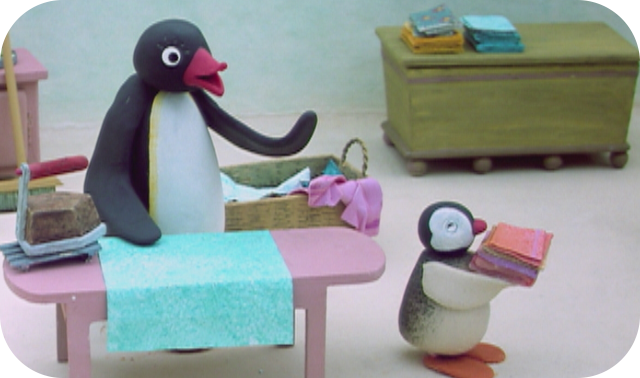
Episode 25
Pingu Helps Around The House
PINGU and Pinga help their mother doing the tedious household chores, although they don’t quite get it all right. Pinga puts a blanket in the oven instead of in the cupboard and although it is clearly not the right thing to do the warm blanket is very cosy and PINGU and Pinga are quite happy to wrap themselves up in it.
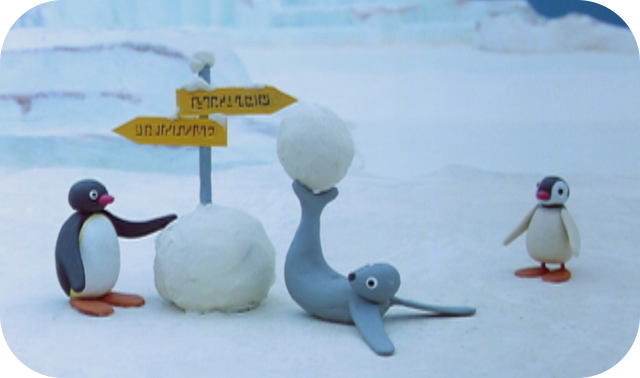
Episode 26
Pingu Builds A Snowman
PINGU, Pinga and Robby build an enormous snowman using the signpost, used by hikers as a support. But in the end the sign is uncovered and the snowman reveals his secret much to the relief of the hiker who would otherwise have become lost.